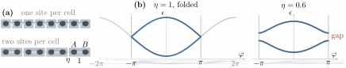

Advanced Quantum Materials 2027 · All lectures · Lecture notes
Session 2. Symmetries, Tight-Binding Band Structure Theory, and Effective Models
2.7 Multi-orbital band structures
Real unit cells almost never have a single orbital. Graphene has two, one per sublattice, compounds of transition metals often have several \(d\)-orbitals per site, and so on. Let \(\alpha\) label the orbital within a unit cell and \(n\) label the unit cell itself. We keep couplings only within a cell and to the nearest-neighbouring cell, and longer-range couplings work with the same method, only with more terms. The most general bilinear Hamiltonian built from these operators is then
\[H = \sum_{n,\alpha,\beta} t_{\alpha\beta}\, c_{n,\alpha}^\dagger c_{n,\beta} + \sum_{n,\alpha,\beta} \left(\gamma_{\alpha\beta}\, c_{n,\alpha}^\dagger c_{n+1,\beta} + \text{h.c.}\right), \tag{2.11}\]
where \(t_{\alpha\beta}\) are the intracell hoppings and \(\gamma_{\alpha\beta}\) are the intercell hoppings. The intracell term already contains both directions of each bond, so \(t\) is a Hermitian matrix, \(t_{\alpha\beta}=t_{\beta\alpha}^*\), and the Hermitian conjugate is only added to the intercell term.
The symmetry that diagonalizes (2.11) is a slightly richer version of a pure translation. It shifts the unit-cell index \(n\to n+1\) and applies a unitary rotation among the orbitals within each cell. The corresponding eigenstates are
\[\Psi_{\varphi,\alpha}^\dagger \sim \sum_{n,\beta} e^{in\varphi}\,U_{\alpha\beta}\,c_{n,\beta}^\dagger,\]
for some unitary \(U\). We put this ansatz into (2.11) and repeat the Fourier argument of Section 2.5 for each orbital, and we find that the required \(U\) is exactly the matrix that diagonalizes the Bloch Hamiltonian
\[H(\varphi) = t + \gamma\, e^{i\varphi} + \gamma^\dagger e^{-i\varphi}, \tag{2.12}\]
which is a matrix whose size is the number of orbitals per unit cell. Each entry is labelled by the pair of orbitals \((\alpha,\beta)\) that it couples. The intracell hoppings \(t_{\alpha\beta}\) enter this entry directly, with no phase, while the intercell hoppings \(\gamma_{\alpha\beta}\) enter multiplied by the phase \(e^{\pm i\varphi}\) that comes from the symmetry eigenvalue. This is the general method that we will use many times. First we count the orbitals per cell, which gives the size of the matrix. Then we put each hopping in the entry of its pair of orbitals, we multiply the intercell ones by \(e^{\pm i\varphi}\), and we diagonalize. Note that an intracell hopping between different orbitals goes off the diagonal, as the example below shows.
A concrete example makes this clear, and it will be important again soon. We take a chain with two orbitals (\(A,B\)), with a strong intracell coupling of magnitude \(1\) between \(A\) and \(B\), and a weaker intercell coupling \(\eta\) between \(B\) in one cell and \(A\) in the next cell. The Bloch Hamiltonian (2.12) is then purely off-diagonal,
\[H(\varphi) = \begin{pmatrix} 0 & 1+\eta\,e^{-i\varphi} \\ 1+\eta\,e^{i\varphi} & 0 \end{pmatrix}, \qquad \epsilon_\pm(\varphi) = \pm\left|1+\eta\,e^{-i\varphi}\right|. \tag{2.13}\]
This chain with alternating hoppings should be remembered by its name, since it is the Hamiltonian of Su-Schrieffer-Heeger type that appears again, now with a topological aspect, in the topology lecture right after this one. Figure 2.3 shows this chain as the chain of (2.8) described with a unit cell of two sites, so that its single band folds into the two bands of (2.13), and it also shows how a gap opens at the zone edge when \(\eta\) moves away from \(1\).

In (2.13) we take \(\eta=1\) and \(\varphi=\pi\). What is the energy of the two bands?
Show the answers
- A. ✓ True
This is true. At \(\varphi=\pi\) the phase factor is \(-1\), so \(1+\eta e^{-i\pi}=1-\eta\), which vanishes for \(\eta=1\). The two bands touch, as the folded band of the uniform chain does at the zone edge.
- B. ✗ False
This is false. The value \(\pm 2\) is \(\pm|1+\eta|\) at \(\varphi=0\) for \(\eta=1\), which is the top and the bottom of the two bands. At \(\varphi=\pi\) we get \(|1-1|=0\).
- C. ✗ False
This is false. The gap at \(\varphi=\pi\) is \(2|1-\eta|\). It is \(1\) for \(\eta=0.5\), but it is exactly zero for \(\eta=1\), so the gap closes.
The gap at \(\varphi=\pi\) is \(2|1-\eta|\), so it closes only when the two hoppings are equal.
We describe the uniform chain with a unit cell of three sites. How many bands do we get, and how wide is the zone?
Show the answers
- A. ✓ True
This is true. The Bloch Hamiltonian is a \(3\times 3\) matrix, so we get three bands. The cell is three times longer, so the zone is three times narrower, and the single band of (2.8) folds into it.
- B. ✗ False
This is false. At \(\varphi=0\) the folded energies \(-2t\cos(2\pi m/3)\) with \(m=0,1,2\) are \(-2t\), \(t\) and \(t\). A \(3\times 3\) matrix has three eigenvalues at each \(\varphi\), so one band is not enough.
- C. ✗ False
This is false. The zone has the width \(2\pi/(3a)\), which is smaller than \(2\pi/a\). A wider zone would need a shorter cell, and our cell is three times longer.
Counting the sites of the cell gives the number of bands, and its length gives the width of the zone.
Notebook check-in: session2.ipynb, “One dimensional chain, band folding” (Challenge), and “One dimensional ladder, band folding” (Challenge)
The “band folding” section builds the same picture from the other direction. You take a chain with a single orbital and describe it again with a larger unit cell, which is the same as having more than one site per cell, and you see how a single band from (2.8) folds into several bands, as (2.12) predicts. The ladder section then works with a real model with two orbitals per cell, in the same spirit as (2.13), and there you can check that the numerical bands agree with \(\epsilon_\pm(\varphi)\).